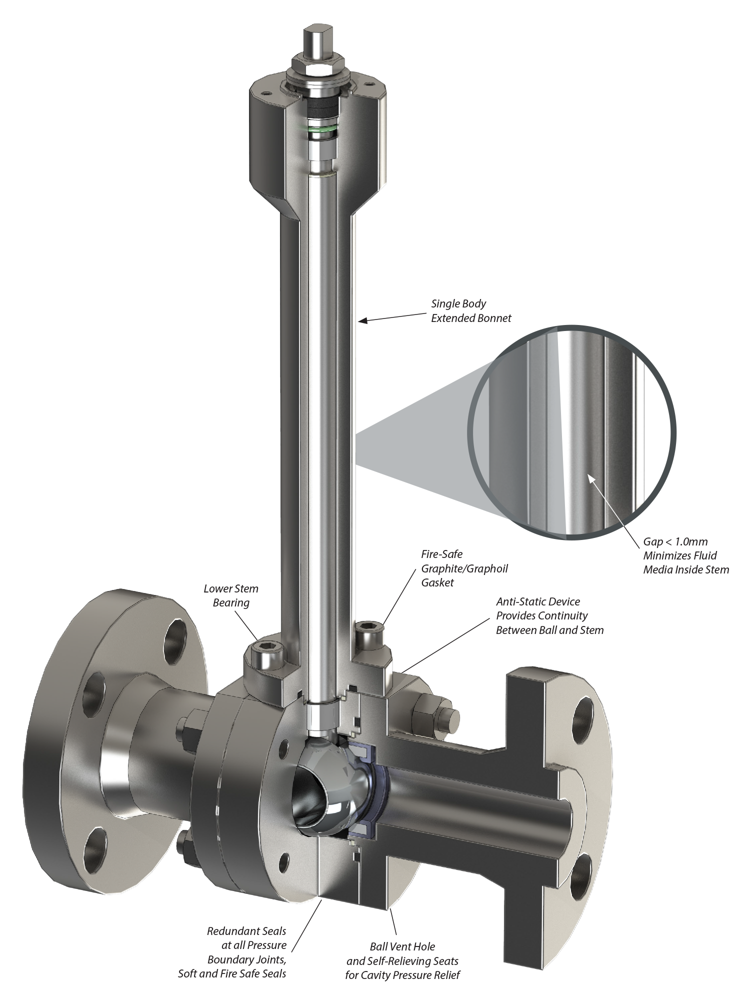

Piping and pipeline systems handling liquid hydrogen, oxygen, helium, nitrogen, liquefied natural gas, or similar very cold fluids require the use of cryogenic valves. The term cryogenics deals with the materials and processes below -101 degrees C. Hence, Cryogenic valves must be designed with properties to handle such low temperatures. The main difference between cryogenic valves from standard valves is that they are able to work in such low temperatures with high pressures.
Cryogenic valves may take the form of many of the valves listed previously. In many cases, material selection will be the defining factor. Selecting materials which can perform under the extreme conditions in which these valves are intended to operate is critical to their suitable function.
Where more sensitive control components are required, longer actuation stems may be used to distance these components from the extreme low temperatures of the fluid.